关于我们
思诺达药业致力于打造国际领先的 AI 驱动抗肿瘤药物研发平台，汇聚全球顶尖科学家与产业专家，构建从靶点发现到临床前验证的端到端智能化闭环。
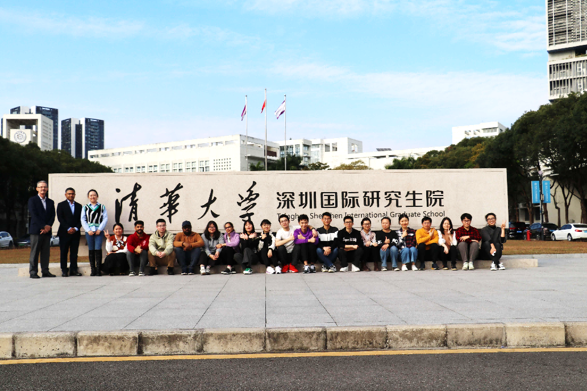
01 核心团队 · 国际顶尖，多点协同
汇聚全球行业精英，构建跨学科协作网络。团队拥有国际顶尖学术背景、20+ 年创新药研发经验，以及从基础研究到产业化的完整闭环能力。
🎓 首席科学家：Peter E. Lobie 院士
- 2003–2010 新西兰奥克兰大学，教授、博导、副院长
- 2010–2017 新加坡国立大学癌症科学研究所，教授、博导、首席科学家
- 2017–至今 清华大学深圳国际研究生院，精准医学与公共健康中心主任、教授、博导、学术委员会副主任
- 发表高水平 SCI 论文 >200 篇
- 总引用 >15,000，h 因子 70
- 担任 CNS 等 50+ 学术期刊审稿人
- 连续多年被爱思唯尔评为“中国高被引用学者”
- 拥有 30+ 授权专利，7 项已转让
- 受聘辉瑞、罗氏医药公司任研究顾问
- Sinotar Therapeutics Ltd 创始人
张熙 · CEO 兼研发总监
慕尼黑大学医学博士
清华大学博士后
深圳市海外高层次人才
深圳湾实验室助理研究员
30+ 论文 8+ 专利 5+ 基金
李婧 · 商务拓展负责人
法国格勒诺布尔大学博士
25+ 年生物医药行业经验
战略规划与商务拓展专家
25+ 管理经验 10+ 项目转化

Steve Guo · 项目总监
山西农业大学硕士
超过 15 年 CRO 端项目管理经验
整体战略、业务开发，精通行业洞察和客户关系管理
15+ 行业经验 10+ 项目管理
团队整体实力
+ 顾问团队
汇聚药物化学、生物光子学、医学工程等领域的资深专家，为平台提供战略指导与技术支撑。
高丹 · 高级顾问
北京化工大学博士
清华大学深圳国际研究生院副研究员
深圳市海外高层次人才
深圳市分析测试协会生化专委委员
60+ 论文 5+ 专利 6+ 基金
秦培武 · 高级顾问
密苏里大学哥伦比亚分校生物化学博士
广东省中医药实验室研究员
清华大学深圳国际研究生院副研究员
中国生物光子学会委员。
深圳市海外高层次人才
100+ 论文 10+ 专利 20+ 基金
Basappa · 高级顾问
印度迈索尔大学化学博士
印度迈索尔大学副教授
印度迈索尔大学有机化学研究所，所长
长期从事化学合成研究工作，拥有丰富制药工业经验
100+ 论文 10+ 专利 20+ 基金
马少华 · 高级顾问
剑桥大学医学工程博士
清华大学长聘副教授
清华大学生物医药与健康工程研究院副院长
50+ 论文 10+ 专利 20+ 基金
02 市场分析 · 痛点明确，规模千亿
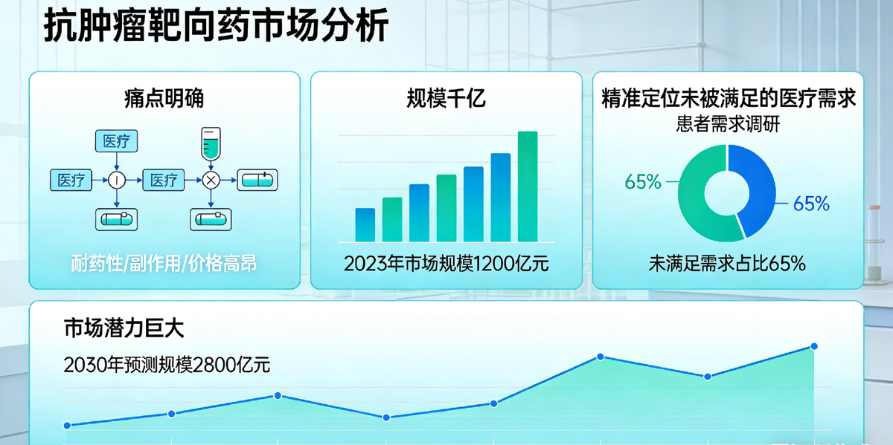
🌏 中国癌症现状与慢病化管理
近年来，中国新发病例和死亡人数均为全球第一，已成为名副其实的“癌症大国”。世界卫生组织（WHO）、中国国家卫生健康委员会等权威机构均已将癌症纳入慢性疾病管理体系，期望癌症患者可通过长期口服药物、阶段性维持治疗，将肿瘤控制在“休眠”状态，实现数年甚至十几年的无进展生存。
📈 全球小分子抗肿瘤靶向药市场规模
全球小分子抗肿瘤靶向药市场展现出强劲的增长韧性，在多方因素共同驱动下，市场规模持续稳步扩大。
🤝 行业核心数据与重磅交易
| 交易/合作 | 靶点/技术 | 金额 | 时间 |
|---|---|---|---|
| 亚盛医药 → 武田 | BCR-ABL 热门靶点 | 13 亿美元 | 2024 年 |
| 加科思 → 阿斯利康 | Pan-KRAS 前沿技术 | 20.15 亿美元 | 2025 年 |
| 拜耳 → Kumquat | KRAS G12D 精准治疗 | 13 亿美元 | 2025 年 |
| 默克收购 Springworks | γ-secretase/MEK 双重机制 | 39 亿美元 | 2025 年 |
| 锐格医药 → 罗氏 | CDK 抑制剂 细胞周期调控 | 8.5 亿美元（首付） | 2024 年 |
| 来凯医药 → 齐鲁制药 | AKT 靶点 信号通路 | 20.45 亿元人民币 | 2025 年 |
| 海正药业 → 艾欣达伟 | SMDC (AKR1C3) 双靶点技术平台 | 2.4 亿元首付款 + 里程碑 | 2025 年 | 本土药企合作典范 |
🎯 市场定位与目标
- ¥1000 亿 — 中国小分子抗肿瘤药物市场（2026）
- 16% — 耐药肿瘤年复合增长率
- 目标市场份额：耐药肿瘤适应症中占 10–15%
- 销售峰值预测：每年 30–50 亿元人民币
- 目标客户：公立医院及私立医疗机构
⚠️ 三大核心痛点
- 晚期癌症患者治疗选择有限：原研药物稀缺，一线治疗后存在显著未满足需求。
- 肿瘤耐药性：由耐药性引发的癌症死亡占比超 90%。
- 多数癌症无特异性驱动靶点：大量癌症处于“有肿瘤、无靶点”的无药可治状态。
🎯 目标适应症
缺乏有效靶向治疗的耐药、转移晚期实体肿瘤患者，主要包括：
- 三阴性乳腺癌：无有效靶向
- 胃癌：无有效靶向
- 肺鳞癌：驱动靶点缺失
- 头颈部鳞癌：核心靶点缺失
- 胶质母细胞瘤：靶点复杂无效
- 卵巢癌：晚期化疗耐药
- 胰腺癌：晚期 KRAS 突变
- 肺腺癌：晚期 TKI 耐药
- 结直肠癌（RAS）：RAS 突变靶向无效
- 宫颈癌：晚期复发靶向有限
🔮 医药研发未来方向
- 找靶点：通过多组学分析，挖掘更多有效靶点
- 造药物：研发泛靶点抑制剂、PROTAC 等，克服耐药 / 异质性
- 定方案：结合免疫 / 化疗 / 靶向，从“单一打击”升级为“多维度精准调控”
🧬 技术驱动
- AI 赋能多组学融合的靶点挖掘平台
- 生成式 AI 的药物设计与评价平台
- 基于器官芯片体系的临床前药效评估平台
🚧 药物研发瓶颈
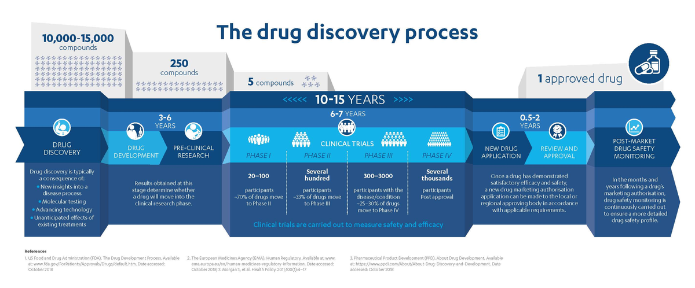
03 技术平台 · AI 驱动，高效创新
🧠 “智药寻踪”平台：AI 重塑研发新范式
现有 AI 工具如 Drugnome AI、PandaOmics、Drug CLIP、Glide、AlphaFold-Multimer 以及 ChemGPT 等多为单一功能工具，无法覆盖药物研发全流程。我们集成并开发了统一的多组学数据分析管道、AI 增强的计算机辅助药物设计与虚拟筛选平台，以及 AI 赋能的临床前评价与试验优化平台。

- 癌症特异性靶点发现
- 生物标志物与耐药性预测
- 个性化治疗方案推荐
- 大规模虚拟筛选
- AI 分子生成与优化
- 多靶点药物理性设计
- 基于肿瘤类器官的药效评价
- 基于器官芯片的 ADMET 评价
- 自动化类器官培养与检测体系
平台优势 可覆盖药物研发全流程，也可根据实际研发阶段按需组合，实现“效率 + 精度”双保障；耗时 7–10 天，核心成本 2000–3500 元 即可筛选出苗头分子候选清单（可直接用于体外实验）。
📊 平台核心模块及技术指标
| 模块 | 核心技术 | 性能指标 |
|---|---|---|
| 靶点智能体 | OncoTarget | 靶点预测准确率 ≥82% |
| 分子生成器 | ChemAI | 月生成 500+ 候选分子 |
| 虚拟筛选 | VS-Screen | 处理海量分子库 |
| 类器官药效评价平台 | PDO-Array | 年测试 200 例 PDO |
| 类器官安全评价平台 | Toxi-Organoid | 毒性预测准确率 ≥90% |
🎯 OncoTarget · 靶点智能体
构建基于 Transformer 架构的多组学基础模型，实现对基因组、转录组、蛋白组、表观基因组等核心数据类型的统一表征与融合分析。
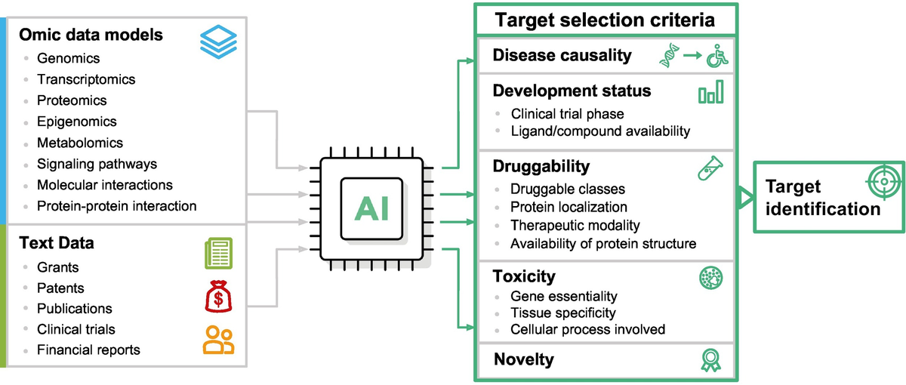
⚗️ ChemAI-Gen · 分子生成引擎
整合蛋白结构预测（同源建模 / AI 预测）、结合位点识别、激酶与 GPCR 的 Type I / Type II 抑制剂设计，支持从靶点到可药性分子的一体化生成。
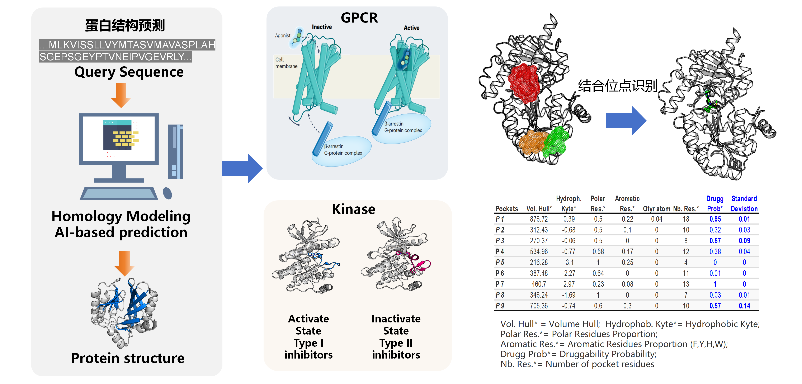
🔍 VS-MegaScreen · 亿级虚拟筛选平台
从 PDB 或序列出发，结合同源建模、分子对接、基于配体的 AI 建模、骨架与子结构搜索，从百万至数十亿量级的商用库中快速聚焦候选化合物。
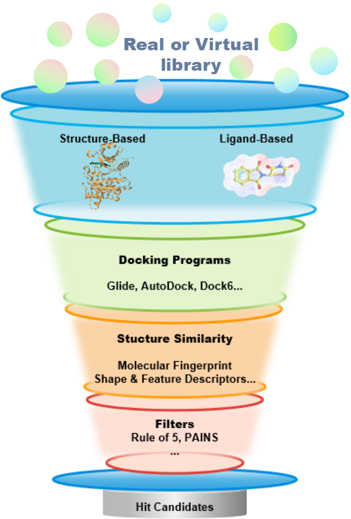
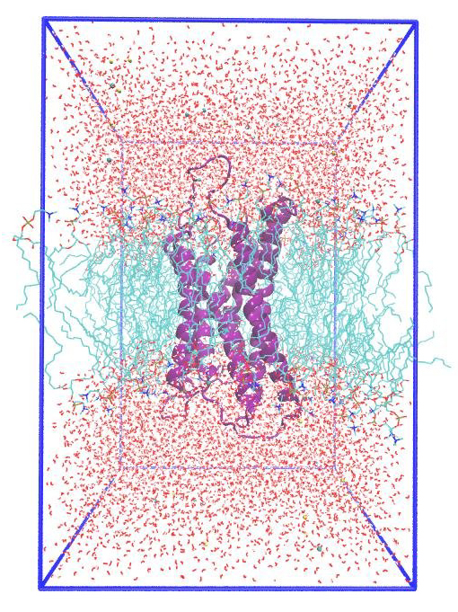
- 海量化合物的智能筛选（百万至数十亿量级）
- 高效筛选，高成功率
- 明确研发起点，指导苗头化合物识别与先导优化
- 降本增效，加速新药发现
- 分子动力学模拟（Molecular Dynamics Simulation, MD）
- Phase I / Phase II 代谢预测
- 预测药物代谢反应（Metabolic prediction）
| 方法 | 化学空间 | 耗时 |
|---|---|---|
| Docking | Millions | Days |
| Pharmacophore | Millions | Days |
| Shape | Millions | Hours |
| Target | 测试化合物数 | Hits (I% > 50% @ 100μM) | Hit rate | 最优化合物 IC50 |
|---|---|---|---|---|
| A | 286 | 25 | 8.7% | 1.35 μM |
| B | 216 | 26 | 12.04% | 9.64 μM |
| C | 270 | 14 | 6.60% | 1.32 μM |
🧫 PDO-Array · 高通量评价体系
建立患者来源类器官（PDO）生物样本库，构建能真实反映肿瘤异质性的“试药替身”。
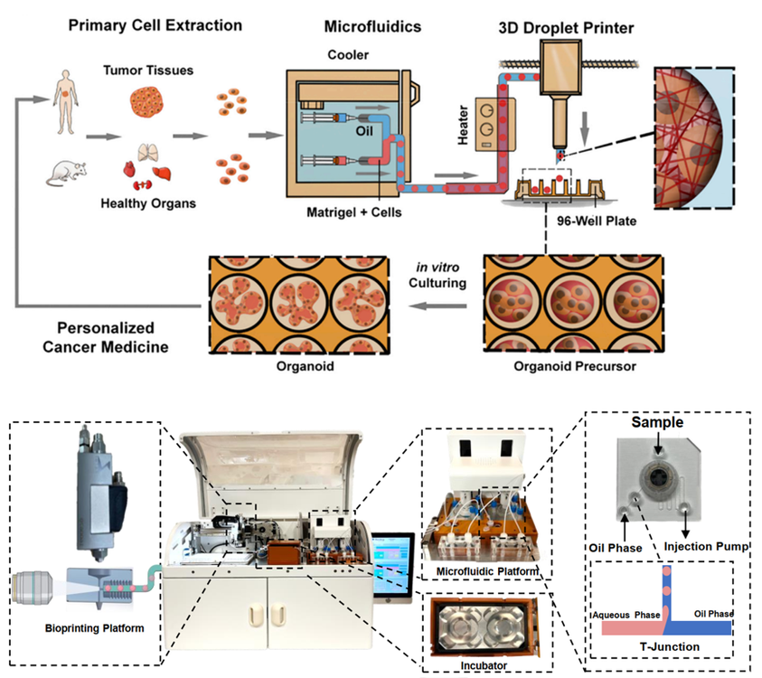
- 高覆盖样本库：年新增 200+ 例患者类器官，覆盖肺癌、乳腺癌、胰腺癌、肝癌等 5 类高致死率肿瘤
- 自动化测试：机械臂与自动化显微镜每周完成 1000+ 药物条件测试
- 临床响应预测：PDO2Clinic 模型预测临床响应准确率达 83%（AUC 0.88）
❤️ Toxi-Organoid · 多器官芯片
在微流控芯片上共培养肝脏、心脏、肠道类器官，模拟药物全身暴露，实现早期、精准的毒性预测。
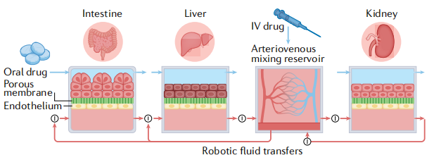
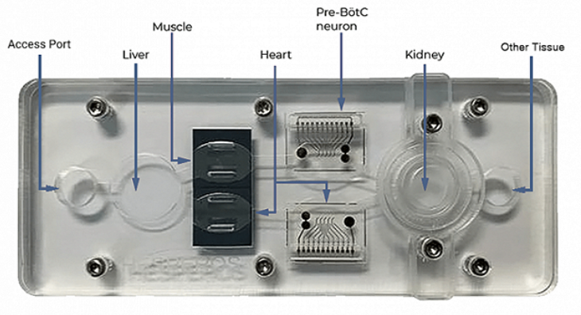
- 多器官联动检测：同步检测 ALT（肝）、QT 间期（心）、肠屏障完整性（肠）等关键指标
- 超高灵敏度：可检测到占比 0.1% 的损伤细胞亚群
- 高临床相关性：28 天重复给药试验中，预计预测 90% 的临床相关毒性
🧪 完善的湿实验平台与 AI + 湿实验研发管线
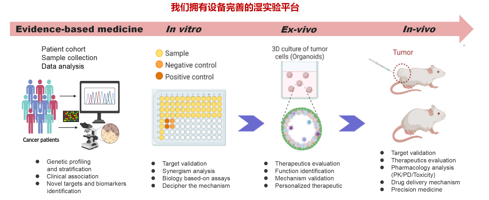
我们拥有设备完善的湿实验平台，涵盖 In vitro、Ex-vivo、In-vivo 多层次评价体系，支持靶点验证、功能鉴定、机制验证、药效评价、PK/PD/毒理学分析、精准医学与生物标志物发现。
在实际应用中，平台将分子对接、ADMET 预测、细胞实验、动物模型等技术协同使用，构建 “AI 筛选 + 湿实验验证” 的高效药物研发管线。
04 三位一体创新范式
🚀 愿景与使命
本平台将填补国内空白，为开发针对 高死亡率实体瘤 及 “无药可医”罕见肿瘤 的突破性疗法提供核心引擎。
构建国际领先的 AI 驱动抗肿瘤药物研发平台，实现从靶点发现到临床前验证的端到端智能化闭环。